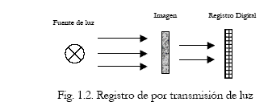

Facultad de Ciencias Basicas e Ingenierias
Lunes|Martes|Miercoles|Jueves|Viernes
-------------------------------------
100 |200 |200 |150 |500
Este Es Tipo Negrita
Este Es Tipo Cursiva
Este Es Tipo Subrayado
Texto Terminal
Letra Grande
Letra Peque�a
Letra Tachada
Letra SubIndice
Letra SuperIndice
Letra Tama�o 4, Color Rojo, Fuente Arial
Letra Tama�o 7, Color Amarillo, Fuente Times New Roman
Letra Tama�o 3, Color Azul, Fuente Arial Courier
Lo que Vemos es Una Linea Con Grosor de 5 con 500 pixeles de ancho
y esta centrada
TEXTO TAMA�O MAYOR
UN POCO MAS PEQUE�O
TAMA�O MEDIANO
No Necesitamos el tag de cambiode linea
Entre mas grnade es el numero mas peque�o es el tama�o de la fuente
Este es el mas peque�o de los textos
